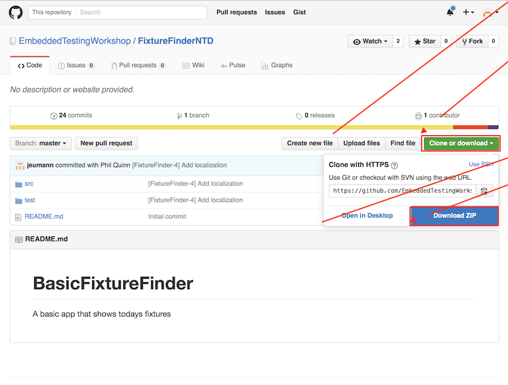
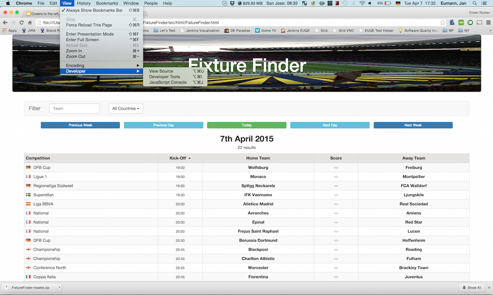
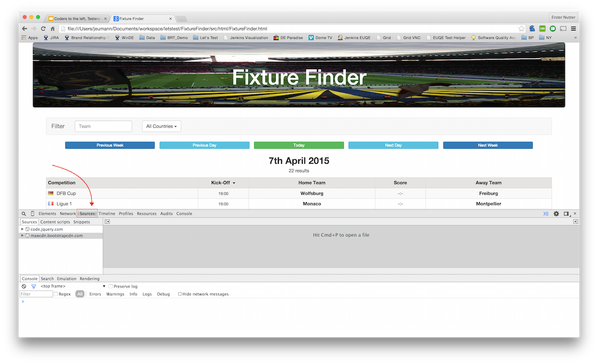
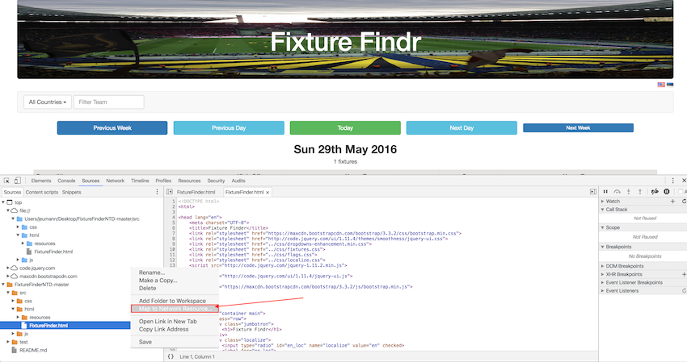

Step 1 - Download sources of example as zip file
https://github.com/EmbeddedTestingWorkshop/Embedded_FixtureFinder

Step 2 - Extract to local folder
Step 3 - Open FixtureFinder.html in Chrome

Step 4 - Open Chrome Dev Tools

Step 5 - Go to Sources Panel

Step 6 - Add locally stored files as a folder to the workspace

Step 7 - Allow Chrome to access the local folder

Step 8 - Map to File System Resource
- Open the directory structure under file://
- Select FixtureFinder.html
- Right click, select "Map to File System Resource"

Step 9 - Select the FixtureFinder.html file from the folder where you saved the download

Step 10 - Restart Dev Tools by clicking “OK”